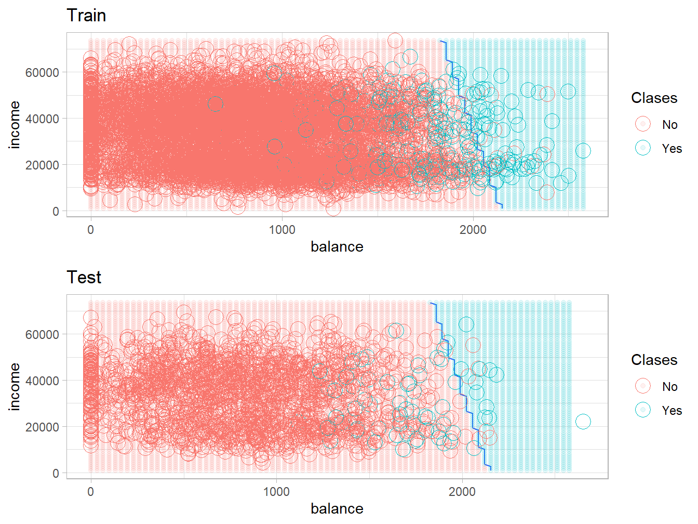

df <- Default[, c("income", "balance", "default")]
set.seed(123)
train.ID <- createDataPartition(df$default, p = 0.8, list = FALSE)
train_df <- df[train.ID, ]
test_df <- df[-train.ID, ]
# definimos como control una validación cruzada con 10 hojas, sin repeticiones
fit_control <- trainControl(method='cv', number = 10)
set.seed(123)
model_lda_def <- train(default ~.,
data = train_df,
method = "lda",
trControl = fit_control)
model_lda_def## Linear Discriminant Analysis
##
## 8001 samples
## 2 predictor
## 2 classes: 'No', 'Yes'
##
## No pre-processing
## Resampling: Cross-Validated (10 fold)
## Summary of sample sizes: 7200, 7200, 7201, 7202, 7201, 7202, ...
## Resampling results:
##
## Accuracy Kappa
## 0.973379 0.3710518## Call:
## lda(x, grouping = y)
##
## Prior probabilities of groups:
## No Yes
## 0.96662917 0.03337083
##
## Group means:
## income balance
## No 33513.73 805.9109
## Yes 32450.16 1753.3628
##
## Coefficients of linear discriminants:
## LD1
## income 9.334558e-06
## balance 2.233976e-03La precisión durante el entrenamiento es de un \(\approx 97\%\). También vemos que las probabilidades a priori \(\pi_i, i = 1,2\) de pertenecer a cada clase son aproximadamente \(97\%\) y \(3\%\) respectivamente, lo cual corresponde a la razón de fallo que se comenta al inicio. El resultado Coefficients of linear discriminants indica las constantes que se multiplican a cada elemento de la muestra \((\text{income}_i, \text{balance}_i)\), \(i = 1, \ldots, n_{\text{train}}\), para obtener su correspondiente valor de la función discriminante lineal:
\[ \delta_k(x) = x^T \Sigma^{-1} \mu_k - \dfrac{1}{2} \mu_k^T \Sigma^{-1} \mu_k+ log(\pi_k) \]
Todo indica que la variable balance tiene un mayor peso en la discriminación. Como alternativa, podemos comprobarlo usando varImp:
## ROC curve variable importance
##
## Importance
## balance 100
## income 0Veamos ahora qué tal es el ajuste en los datos test.
# hagamos las predicciones del conjunto de prueba
prediction_lda_def <- predict(model_lda_def, newdata = test_df)
confusionMatrix(prediction_lda_def, reference = test_df$default)## Confusion Matrix and Statistics
##
## Reference
## Prediction No Yes
## No 1927 54
## Yes 6 12
##
## Accuracy : 0.97
## 95% CI : (0.9615, 0.977)
## No Information Rate : 0.967
## P-Value [Acc > NIR] : 0.2488
##
## Kappa : 0.2755
##
## Mcnemar's Test P-Value : 1.298e-09
##
## Sensitivity : 0.9969
## Specificity : 0.1818
## Pos Pred Value : 0.9727
## Neg Pred Value : 0.6667
## Prevalence : 0.9670
## Detection Rate : 0.9640
## Detection Prevalence : 0.9910
## Balanced Accuracy : 0.5894
##
## 'Positive' Class : No
## # extraemos el Accuracy o Precisión
confusionMatrix(prediction_lda_def, reference = test_df$default)$overall[1]## Accuracy
## 0.969985# la tasa de error
tasa.error.lda <- 1-confusionMatrix(prediction_lda_def, reference = test_df$default)$overall[1]
names(tasa.error.lda) <- "Error LDA"
tasa.error.lda## Error LDA
## 0.03001501Como estamos en un problema de clasificación en dos dimensiones (\(p = 2\)), es posible representar la frontera de decisión del algoritmo, usando la función decision_bound. Debemos modificar los campos para que coincidan con las variables de Default:
decision_bound = function(train_df_in, test_df_in, model_in){
# plot decision boundary for df <- Default[, c("income", "balance", "default")]
require(MASS)
require(caret)
require(ggplot2)
require(gridExtra)
# Paso 1: crear un grid de valores desde min a max de ambos predictores
pl = seq(min(train_df_in$balance), max(train_df_in$balance), length.out = 80)
pw = seq(min(train_df_in$income), max(train_df_in$income), length.out = 80)
lgrid <- expand.grid(balance=pl, income=pw)
# Paso 2: obtener las predicciones tanto para el grid como para el test
modelPredGrid <- predict(model_in, newdata=lgrid)
train_df_in$Pred.Class <- predict(model_in, newdata = train_df_in)
test_df_in$Pred.Class <- predict(model_in, newdata = test_df_in)
# Paso 3: ggplot con la funcion contour
gg1 <- ggplot(data=lgrid) +
stat_contour(aes(x=balance, y=income, z=as.numeric(modelPredGrid)), bins=2) +
geom_point(aes(x=balance, y=income, colour=modelPredGrid), alpha=0.1) +
labs(colour = "Clases") + ggtitle("Train") +
geom_point(data=train_df_in,
aes(x=balance, y=income,
colour=default), size=5, shape=1) +
theme_light()
gg2 <- ggplot(data=lgrid) +
stat_contour(aes(x=balance, y=income, z=as.numeric(modelPredGrid)), bins=2) +
geom_point(aes(x=balance, y=income, colour=modelPredGrid), alpha=0.1) +
labs(colour = "Clases") + ggtitle("Test") +
geom_point(data=test_df_in,
aes(x=balance, y=income,
colour=default), size=5, shape=1) +
theme_light()
grid.arrange(gg1, gg2, ncol=1, nrow=2)
}